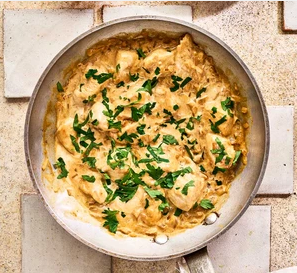

Chicken Stroganoff

Golden skinless chicken breasts smothered
in a
full-flavoured stroganoff sauce for an easy
weeknight dinner.
Ingredients
- 2 tbsp olive oil
- 4 skinless chicken breasts, cut into chunks
- 2 onions, finelly chopped
- 4 garlic cloves crushed
- 1 tbsp sweet paprika
- 400ml chicken stock
- 4 tsp Dijon mustard
- 2 tbsp Worcestershire sauce
- 200g soured cream or crème fraiche
- a large handful of parsley, chopped
- rice mash or pasta, to serve
Steps
-
Heat half the oil in a frying pan and fry
the chicken pieces over a medium high heat,
stirring frequently. until golden brown.
Season and transfer to a plate.
-
Heat the remaining oil and lower the heat to
medium.
Fry the onion for 6-8 mins until
softened but not golden,
then stir in the
garlic and paprika. Fry for a minute until
fragrant,
then pour in the stock, and add the
Dijon and Worcestershire sauce.
Tip in the
eared chicken with any resting juices, and
simmer for 5-6 mins
until reduced slightly and
the chicken is cooked through.
-
Over a low heat, stir in the soured cream until
just combined to create
a creamy sauce, and it’s
just started to simmer.
Scatter over the parsley
and serve with rice, mash or pasta, if you like.
Home Page